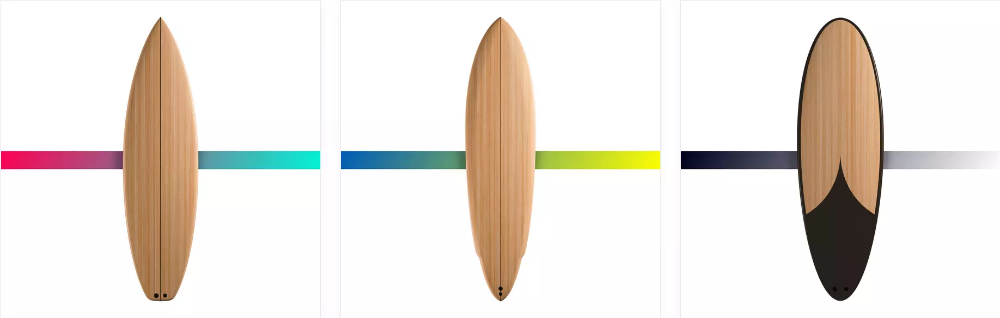
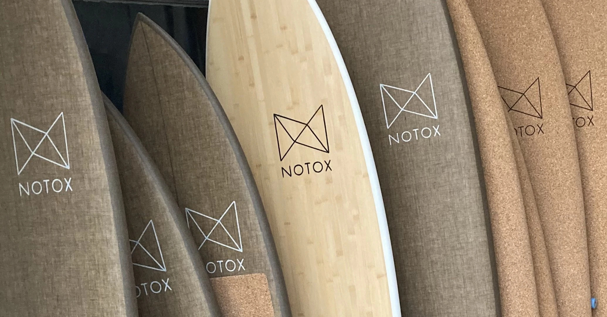
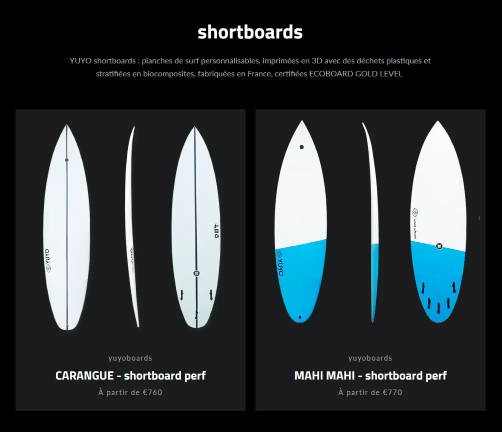
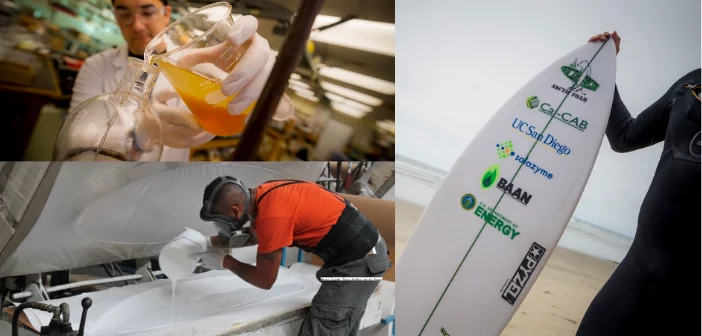
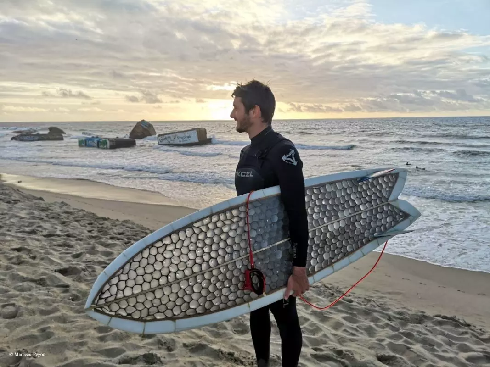
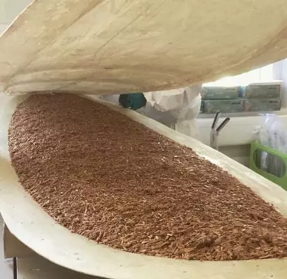
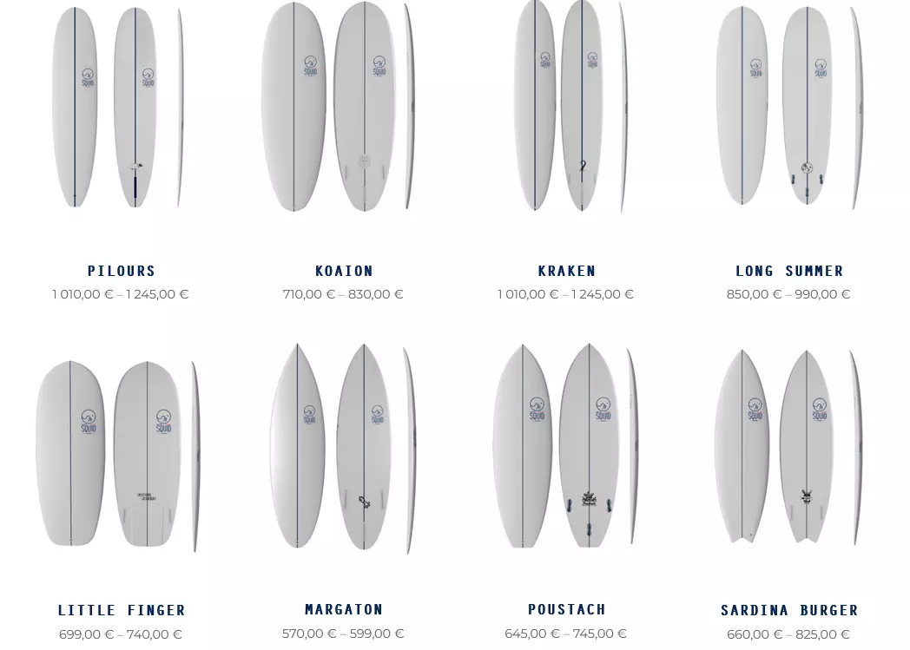
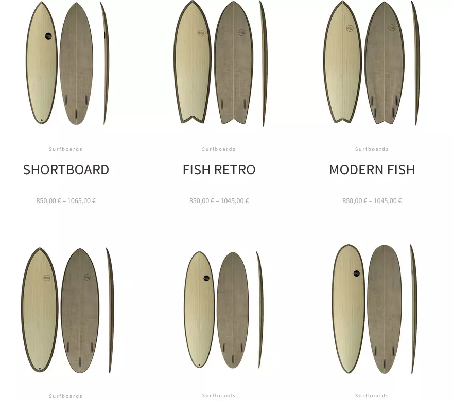
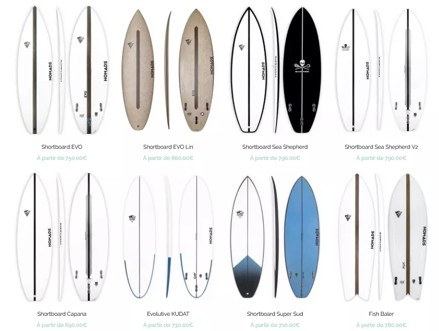

Bois
Surfer une planche shapée dans une matière naturelle comme le bois te permettra de revenir aux origines du
surf et de te reconnecter avec la nature. Utiliser une board en bois te permettra de t’affranchir de la
quasi-totalité des produits polluants et toxiques. Certains shapers artisanaux proposent même des planches
qui sont huilées ou vernies évitant la consommation de résine et de fibre de verre. Pour garantir un impact
environnemental minimum, tu devras t’assurer de la provenance du bois. Il doit être sourcé localement et
provenir d’une forêt gérée durablement.

https://revosurfboards.fr/gamme-planches-surf-bois/
Mousse EPS recyclé
Pour réduire l’impact de la fabrication des pains de mousses EPS, certains fabricants proposent d’intégrer
une part d’EPS recyclé. Cette part représente en général 25% de la composition totale.

https://notoxsurf.com/
PLA et PET recyclé
Plus connu, le PET recyclé est tout simplement le plastique issu du recyclage des bouteilles en
plastique.Ces deux matières premières sont utilisées grâce à la technique d’impression 3D. Parmi les marques
qui utilisent l’impression 3D, on retrouve Yuyo. Pour la fabrication de ses noyaux, la marque
montpelliéraine a mis au point une composition mixte à base de PLA et de PET recyclé.

https://yuyo.surf/
Algues
Produire une huile à base d’algue permettrait donc de fabriquer des pains de mousse relativement proches
des pains de mousse en PU issus de la pétrochimie. Bien que cette alternative ne semble pas encore tout à
fait aboutie, le travail de recherche et développement est toujours en cours et les premiers prototypes ne
devraient plus tarder… Cette solution technique soulève tout de même quelques questions, au niveau de la
culture des algues, qui seraient génétiquement modifiées, ainsi qu’au niveau de la recyclabilité des chutes
de production.

Planche de surf en carton
Bon, je te passe les jeux de mot du style « les planches de surf qui vont faire un
carton » ou « le concept qui va cartonner »…
La fabrication d’une planche de surf en carton consiste
tout simplement à remplacer le noyau en mousse PU ou EPS par du carton avec une structure en nid d’abeille.
Si tu suis bien, tu te diras « sympa le concept, mais le carton dans la flotte ce n’est quand même pas
l’idée du siècle ». Et tu as raison, une fois le carton assemblé, la planche passe par l’étape indispensable
du glaçage. Par contre attention en cas d’impact… Si l’eau s’infiltre à travers la couche de stratification
et pénètre dans la structure cartonnée alors la planche est morte.Et dans le même genre mais encore plus
original, on a l’idée du jeune bordelais Marceau Pegon qui utilise le même concept mais à base de carton
recyclé issu de rouleaux de PQ… A suivre !

Planche de surf en Champignons
Le processus de fabrication des pains de mousse en champignon a été inventé et développé par la société
Ecovative. Il consiste à mélanger ce mycélium avec des déchets agricoles (paille, maïs,…) puis à placer
l’ensemble dans un moule avec le shape souhaité. Les champignons vont alors consommer les déchets agricoles
et remplir au bout de quelques jours la totalité du moule. D’un point de vue environnemental ce procédé
semble très vertueux. Le process nécessite peu d’énergie, il consomme peu de ressources (déchets agricoles
principalement) et est biodégradable.

Résine bio-sourcée
Cette résine plus écologique peut contenir jusqu’à 56% de carbone sourcé à partir de plantes et de
matières végétales.L’utilisation de ce type de résine pourrait réduire de 30 à 50% les émissions CO2 d’une
planche.Couplée à des techniques pour limiter la quantité de résine utilisée, comme la stratification sous
vide, l’utilisation de résine bio sourcée permet de réduire considérablement l’impact d’une planche.

https://www.squid-surfboards.com/surfboards/
Fibre de lin
La fibre de lin est une fibre végétale qui offre un double avantage. C’est une fibre longue qui dispose de
très bonnes propriétés mécaniques et elle est fabriquée à partir du lin qui est cultivé en France. Grâce à
ses propriétés mécaniques plus importantes (315 g/m²) que le tissu en fibre de verre (125 à 200 g/m²), le
shaper peut réduire le nombre de couches utilisées. Une seule couche sur le pont et une sur la carène
peuvent suffire au lieu des 3 ou 4 utilisées dans la fabrication classique.

https://squallsurfboards.fr/categorie-produit/surfboards/
Fibre de basalte
La fibre de basalte dispose de caractéristiques proches de la fibre de carbone et permet de renforcer la
structure de la planche. Cependant, son processus de fabrication nécessite de faire fondre la roche
volcanique et demande beaucoup d’énergie. Son avantage écologique reste donc très discutable.

https://www.nomads-surfing.com/categorie/planches/
Liège
Le liège est une matière naturelle puisée dans l’écorce de l’arbre chêne-liège. Grâce à leur propriété
imperméable et anti-dérapante, ces feuilles de liège plaquées sur le pont et la carène permettent de réduire
significativement la quantité de résine utilisée ainsi que la Wax. Cette finition liège renforce également la
solidité de la planche pour une durée de vie maximale.
 https://notoxsurf.com/
https://notoxsurf.com/